|
|

در نشست مطبوعاتی کانون مدافعان حقوق بشر عنوان شد:
موج بزرگ اعتراضات به لایحه حمایت از خانواده در راه است
آیدا سعادت/ عکس:راحله عسگری زاده
دو شنبه14 مرداد 1387
نشست مطبوعاتی کانون مدافعان حقوق بشر در اعتراض به تصویب لایحه حمایت از خانواده، با حضور جمع کثیری از فعالان حقوق زنان، اصحاب رسانه های داخلی و خارجی وهمچنین شخصیت های اجتماعی، سیاسی و فرهنگی، امروز 14 مرداد برگزار شد.
در این نشست شیرن عبادی،سیمین بهبهانی،ابراهیم یزدی،حسن یوسفی اشکوری، عباس عبدی، رخشان بنی اعتماد، احمد زیدآبادی، پروین اردلان، شادی صدر، منصوره شجاعی و ثریا عزیز پناه اعتراض طیف های مختلف اجتماعی و سیاسی را به این لایحه اعلام کردند.
در ابتدا نرگس محمدی، دبیر کمیته زنان کانون مدافعان حقوق بشر با بیان اینکه کانون مدافعان حقوق بشر پیش تر نیز اعتراض خود را به این لایحه اعلام داشته، این لایحه را خلاف حقوق بشر و حقوق انسانی زنان ایرانی عنوان کرد.
وی با قرائت فتوای آیت الله صانعی در مخالفت با ازدواج مجدد بدون اجازه همسر اول و وضع مالیات بر مهریه ،گزارش کوتاهی از روند این لایحه ارائه داد:"لایحه موسوم به حمایت از خانواده در شهریور 86 از طرف قوه قضائیه به دولت ارائه شد و دولت هم پس از جرح و تعدیل افزودن بندهایی که هم اکنون مورد مناقشه است، آن را به مجلس شورای اسلامی فرستاد که در کمیسیون فرهنگی مطرح شد و مسکوت ماند. در روزهای آغاز به کار مجلس هشتم این لایحه وارد دستور کار شد و در کمیسیون حقوقی و قضائی مجلس بدون هیچ گونه تغییری به تصویب رسید و آماده ارائه در صحن علنی مجلس برای رای گیری از نمایندگان است. "
عبادی: عده ای می خواهند عقاید خود را در قالب قانون به مردم تحمیل کنند
کنفرانس مطبوعاتی کانون مدافعان با سخنان شیرین عبادی آغاز شد. عبادی گت:"این لایحه فقط ناظر به زنان نیست و نباید تصور کرد که چون در این لایحه به زن دوباره و سه باره ستم شده ، این زنان هستند که باید واکنش نشان بدهند، قانون بد جامعه را به سوی انحطاط وفساد اخلاقی می کشد وحساسیت نسبت به قانون نادرست تکلیفی برعهده ی یکایک افراد حامعه است، چه ظاهرا در آن قانون برنده باشند وظالم و چه مظلوم و بازنده. از همین روست که ما از سخنرانان آقایان خصوصا در مناصب سیاسی هم خواهش کردیم که اعلام موضع کنند. چرا که مساله فقط این نیست که زنان نمی خواهند هوو داشته باشند. مساله این است که با چنین قانونی جامعه به کجا خواهد رسید."
رئیس کانون مدافعان حقوق بشر تصویب چنین قانونی را ستم بر افراد شریف جامعه دانسته و افزود: "این قانون فقط بر زن ستم نمی کند ، بلکه به مرد هم می گوید اگر نوکیسه هستی و به هر طریق پولدار شدی می توانی بر هوس های خود جنبه قانونی ببخشی. این توهین به آقایان نیست...؟ این تزلزل در بنیاد خانواده نیست؟ بنا بر این ما فقط از گروه های فعالان زن دعوت نکرده ایم بلکه از مردان فعال سیاسی هم خواستیم که بیایند و این موضوع را بررسی کنند. آیا جامعه باید اینطور باشد که هر مردی که به صرف چند معامله که انجام داد بتواند زن دوم و سوم بگیرد؟"
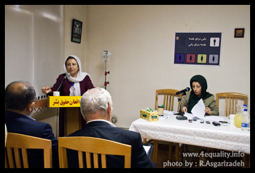
عبادی با اشاره به ضرورت پرداختن به جنبه های فقهی لایحه و تبعات آن گفت: " وقتی این لایحه در کمیسیون تصویب شد گفتند عین اسلام و شریعت است و کسی حق مخالفت ندارد. ما برای این که بگوییم این سخن نادرست است مساله را از جنبه های فقهی هم بررسی می کنیم که ببینیم آیا واقعا همینطور است و یا این که عده ای می خواهند عقاید خود را در قالب قانون به مردم تحمیل کنند."
وی با تاکید بر اینکه نقد حکومت و به چالش کشیدن آن فقط از طریق چالش و نقد قانون امکان پذیر است، ادامه داد:" حکومت ها با قانون با مردم صحبت می کنند و ایدئولوژی خود را در قالب قانون بیان می کنند و با قانون است که ما می توانیم به کنه ایدئولوژی یک حکومت پی ببریم. قانون اهمیت دارد و نگرش آن در خصوص خانواده رانیز باید مورد نقد قرار دهیم."
عبادی اضافه کرد:"فراموش نکنید در اصل دهم قانون اساسی ما آمده است قوانین باید قداست و استحکام خانواده را تضمین کند. ما در این جلسه بررسی می کنیم ببینیم آیا با چنین قانونی قداست و استحکام خانواده تامین می شود یا خیر؟"
ابراهیم یزدی: جریان گذشته نگری که استطاعت فهم پیچیدگی های جامعه امروز را ندارد قانون می نویسد
ابراهیم یزدی دبیر کل نهضت آزادی در رابطه با توجیهات شرعی تعدد زوجات گفت:"بسیاری از مفسران بر این باورند اگر چه در سوره نساء خدا می گوید به شرط عدالت می توانید همسر دوم اختیار کنید اما در همان سوره می گوید به هیچ وجه نمی توانید عدالت را رعایت کنید و توجه به این آیه یعنی شرط عدالت به معنای رفتار عادلانه مالی نیست.چرا که ممکن است مردی همه امکانات را داشته باشد اما با همسرانش رفتار عادلانه نداشته باشد."
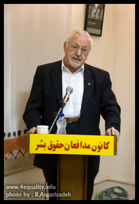
دبیر کل نهضت آزادی با اشاره به این که شرط تمکن مالی بی توجهی و غفلت نسبت به بهداشت ازدواج است ادامه داد:" این بهداشت فقط شامل عوامل مالی نیست بلکه مسائل مهمتری مطرح است که با امکانات مالی قابل تامین نیست و شاید به این دلیل است که شرط موافقت همسر اول در قانون فعلی را می توان عین عدالت دانست. اگر طرفین به چنین عملی رضایت داشتند به یک معنا می توانیم بگوییم چنین عملی عادلانه و منصفانه است. بیرون آوردن این مفهوم از عدالت و قرار دادن آن در چارچوب مالی به کلی با موازین خانواده و بهداشت ازدواج مغایر است."
یزدی گفت: "ما با یک جریانی از ابتدای انقلاب مواجه بوده ایم که در شرایط متلاطم آن دوره به خصوص به دلیل حضور میلیون ها زن ایرانی درانقلاب این جریان نتوانست حرف خودش را بزند . این جریان اگر در همان دوره حرف هایی که امروزنسبت به حقوق زنان می زنند ،از همان روزهای اول صف ها از هم جدا می شد."
به اعتقاد یزدی این جریان گذشته نگر است و استطاعت فکری برای فهم پیچیدگی های جامعه امروز را ندارد و با نگاه ساده اندیشانه خود جامعه پیچیده کنونی را با جامعه زمان پیامبر و مدینه النبی مقایسه می کند."
وی با اشاره به لغو برخی از شروط و عدم ثبت ازدواج موقت در لایحه حمایت از خانواده گفت : "باید به این نکته توجه شود که تنها مساله ثبت ازدواج موقت در میان نیست و حذف این شرط از جهت صیانت حقوق فرزندان هم مهم است. زنان ایرانی که با مردان افغانی ازدواج می کنند و صاحب فرزند می شوند چون قانون می گوید قبل از ازدواج باید از وزارت کشور و اتباع بیگانه اجازه بگیرند در غیر این صورت اداره ثبت به فرزندان آنان شناسنامه نمی دهد و به همین دلیل هزاران نفر هستند که در شرایط فعلی وضعیت روشنی ندارند و شناسنامه ای ندارند که فرزند خود را به مدرسه بفرستند. آینده این زنان و فرزندان چه می شود؟ از کانون می خواهم که نسبت به این مساله به موازات حقوق زنان توجه شود . زنان این حق را دارند که زیر بار ازدواج موقت نروند اما فرزندان این گونه ازدواج ها چنین اختیاری ندارند و باید نسبت به این مطلب حساسیت نشان داد."
دکتر یزدی با تاکید بر اهمیت کار توضیحی در پیشبرد اهداف و برنامه های گروه های زنان، ادامه داد:" نمایندگان جنبش زنان باید در دیدارهای حضوری با نمایندگان آنان را به چالش بکشند و داشتن برنامه کار توزیعی در جنبش زنان را پیروزی بزرگی در ادامه این حرکت دانستند.
سیمین بهبهانی: وظیفه ما ایرانیان است که تا حد جان با این قانون مخالفت کنیم
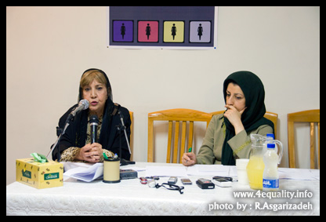
"بیش از صد سال است که زنان ایران زحمت می کشند تا حقوق خود را به دست بیاورند و مجلس هشتم به یکباره تمام این حقوق را بلعید. وظیفه تمام مردان و زنان و کودکان ایرانی که بیش از سایرین از این لایحه صدمه می خورند این است که با این لایحه مخالفت کنند، هر چند که امور حقوقی آن گذشته و نزدیک است به اجرا قبول نکنند و مقاومت کنند"
سیمین بهبهانی با بیان این مطلب به سخنان آیت الله صانعی و آیه صریح قران اشاره کرد که تاکید می کند اگر نتوانید عدالت را اجرا کنید فقط باید یک زن داشته باشید.
وی گفت : " من این کار را یک اقدام ضد شریعت و قانون می دانم . چون احساس عدالت کردن در مورد یک امر روانی، قابل اثبات و تصور نیست و این امر باید به طور کلی تحریم شود."
سیمین بهبهنی تاکید کرد:" وظیفه ما ایرانیان است که تا حد جان با این قانون مخالفت کنیم."
یوسفی اشکوری : تصویب این لایحه یک فاجعه است
حسن یوسفی اشکوری سخنران بعدی این مراسم با ذکر خاطره ای از دوران نمایندگی خود در مجلس سخنانش را چنین آغاز کرد: "در زمانی که در مجلس اول بودیم به یک مناسبتی قانونی در ارتباط با خانم ها مطرح شد با این مضمون که خانم های شاغل در ادارات ، برای رسیدگی به امور خانواده و فرزندان بخشی از وقتشان را در خانه بگذرانند یک خانمی از رامسر، حوزه انتخابیه من، نامه این نوشته و گفته بود که در ایام انقلاب بحث مبارزه و به میدان آمدن و شعار دادن و ابراز احساسات و عواطف بود می گفتید شما هم به خیابان بیایید و همدوش مردان اعتراض کنید و تظاهرات کنید. آن زمان مرد و زن کنار هم بودند حالا که موقع تقسیم بهره های انقلاب است در مجلس قوانینی تصویب می کنید که به طور مرتب برای زنان محدودیت ایجاد می کند."
اشکوری در ادامه به صدور بیانیه از سوی فعالان ملی مذهبی در خصوص این لایحه اشاره کرد که طی آن از این قانون به عنوان فاجعه یاد شده است . او تاکید کرد : " اگر همه به لوازم جانبی چنین قانونی بیندیشند سرانجام به فاجعه خواهیم رسید. یعنی نه تنها دستاورد صد سال مبارزات مساوات طلبانه جامعه بر باد می رود حتا دیدگاه سنتی مذهبی که آقایان از آن صحبت می کنند هم ویران خواهد شد. "
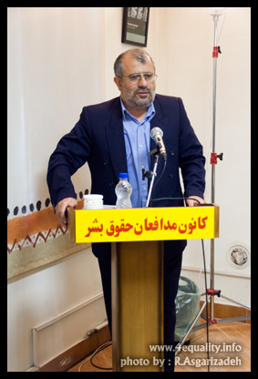
اشکوری مقدمه قانون اساسی را یادآور شد که از خانواده به عنوان اصلی بنیادین یاد می کند و افزود:" در مقدمه قانون اساسی ما از خانواده به عنوان اصل بنیادین جامعه یاد شد این قانون در نهایت به فروپاشی خانواده می انجامد از این جهت جا دارد که نام لایحه ی فروپاشی خانواده یا لایحه ضد خانواده را بر این لایحه بگذاریم."
وی در ادامه بحث عدالت در ازدواج مجدد را از منظر فقهی مورد بررسی قرار داد:"این عدالت به هر معنایی که گرفته شود یک مساله ی مفهومی و مصداقی و زمانی و مکانی است. این بحث به عنوان آرمان مطلق فرازمانی و تابع شرایط زمان و مکان است بنا براین از نظر تاریخی با توجه به واقعیت ها در شرایطی داشتن دو همسر می تواند عادلانه باشد و در شرایط دیگر ظالمانه . اگر به این بحث به گونه ای ارزشی پرداخته شود آنچه که من به عنوان یک مسلمان از اسلام می فهمم اصل و جهت گیری اسلام بر تک همسری است. چنانچه دکتر شریعتی در کتاب اسلام شناسی.. در سال 46 گفت وجدان عصر ما تعدد زوجات را توهین بزرگی به زنان و مردان می داند و از طرف دیگر باعث زوال خانواده می شود . "
یوسفی اشکوری مالیات بر مهریه را از شاهکارهای لایحه عنوان کردو افزود:" ظاهرا قصدشان خیر بوده و خواسته اند جلوی مهریه های نامتعارف را بگیرند، اما مهریه سنگین علل متعددی دارد و با قانون نمی شود آن را اصلاح کرد. معیار نامتعارف بودن هم مشخص نیست که بخواهند از آن مالیات بگیرند."
به اعتقاد این نواندیش دینی. تصویب این لایحه یک فاجعه است که دودش هم به چشم زنان می رود، هم به چشم مردان."
رخشان بنی اعتماد :زیر پوست شهر چه می گذرد؟
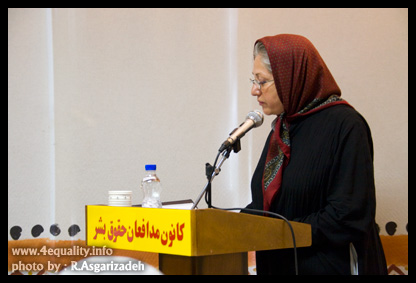
"در زیر پوست شهر نهاد خانواده بی دفاع و شانه خم کرده زیر فشارهای اجتماعی سعی در حفظ خود از فروپاشی دارد. در زیر پوست شهر خانواده ... مسئولیت هایی است که ضعف سیستم اجتماعی وظایف طبیعی خود را بر گرده ی او سوار کرده است. در زیر پوست شهر به جای آن که با حمایت ها اجتماعی سعی در تعدیل بحران ها ی خانواده شود با مشروعیت بخشیدن به موقعیت های بحران زا نهاد خانواده در معرض از هم پاشیدگی بیشتر قرار می گیرد. نقض مفاد لایحه حمایت از خانواده محدود به بحث حقوق زنان نیست و زمانی که این لایحه عنوان حمایت از خانواده را بر خود دارد نقض حقوق هر یک از ارکان این نهاد به معنای نادیده گرفتن حقوق همه افراد است.
به راستی چند درصد از مردان ایرانی نه به عنوان همسر بلکه به عنوان پدر به مفاد این لایحه رای مثبت می دهند؟ چند درصد از پدران شرایط قید شده در این لایحه را به نفع دختران خود می دانند؟ آقایان نماینده مجلس به هنگام اعلام رای حتما فراموش نخواهند کرد که دیگر روزی پاسخگوی دختران خود و دختران تاریخ خواهند بود. "
رخشان بنی اعتماد، کارگردان سینما نیز با بیان این سخنان مخالفت خود را با لایحه حمایت از خانواده اعلام کرد.
شادی صدر:این لایحه دهن کجی به تمام مبارزات زنان است
در ادامه این نشست شادی صدر، فعال حقوق زنان به بررسی چرایی مخالفت با این لایحه و سایر اقدامات ضد زن در سالهای اخیر پرداخت.
وی با تاکید بر اینکه مخالفت با لایحه به ماده 23 که تعدد زوجات را تسهیل می کند یا ماده 25 در مورد مهریه و یا ماده ای که ثبت ازدواج موقت را محدود نمی شود، گفت:"ممکن است نمایندگان مجلس بگویند این مواد را تعدیل می کنند و این همه اعتراض برای چیست چرا موج بزرگی از اعتراض نه تنها در زنان فعال که در میان زنان مذهبی فعال در جنبش زنان ومردان و احزاب و گروه های سیاسی در حال راه افتادن است؟"
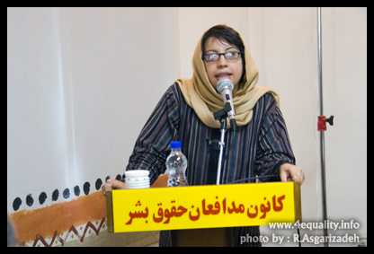
صدر این لایحه را ضمیمه یک نظام حقوقی مردسالار دانست که در بسیاری از قوانین از جمله قانون مدنی خودش را نشان می دهد و در آن مرد رئیس خانواده است و این مقام را به دلیل مرد بودن به دست آورده است .بنابراین طبیعی است که در چنین نظامی حق چند همسری به رسمیت شناخته شود و زن حق طلاق نداشته باشد و موظف به تمکین باشد و تصمیم گیری های مهم خانواده از جمله تعداد فرزندان بر عهده ی مرد باشد ولایت فرزندان حق غیر قابل تفویض مردان باشد و همه موارد دیگری که به تفسیر می دانیم."
وی ادامه داد:" در واقع اعتراض به لایحه ، اعتراض به بازتولید مردسالاری در نظام حقوقی حاکم برخانواده است. بنابر این اعتراض ما تنها به حذف این مواد نیست چرا که ممکن است به آسانی با حذف این مواد موافقت کنند اما آنچه ما می خواهیم تبدیل خانواده مردسالار در قوانین به خانواده برابر است. "
این وکیل دادگستری، دلیل دیگر اعتراض به تصویب این لایحه را بی اعتنا ماندن تصویب کنندگان و نویسندگان این لایحه به خواست اجتماعی زنان و نادیده گرفتن همه مطالباتی دانست که از صد سال پیش تا به حالا مطرح شده و در واقع تصویب این لایحه دهن کجی است به تمام این مبارزات. به این دلیل است که زنان تا این حد به لایحه خشمگین هستند .چرا که این لایحه واپسگرایی نسبت به همین وضعیت موجود است که مورد قبول هیچ کدام از ما نیست. "
وی لایحه حمایت خانواده را جزئی از "پروژه نوبنیاد گرایی" عنوان کرد و گفت:"نو بنیاد گرایان زندگی زنان را هدف گرفته اند و این لایحه تنها یک تیر در ترکش آنهاست . تیرهای دیگری هم هست لایحه مجازات اسلامی که همچنان تمامی روابط خارج از ازدواج را جرم دانسته و برای آن مجازات سنگین مثل سنگسار وضع می کند. همچنان برای دفاع مشروع زنان شرایطی غیر قابل اثبات گذاشته است . همچنان اعدام زیر 18 سال باقی است . تیر دیگر نظام سهمیه بندی جنسیتی است که زنان را از حق تحصیل محروم می کند و برخانه نشین کردن آنان صحه می گذارد. تیرهای دیگری که شلیک شده اند و ما برخی را می بینیم طرح گسترش فرهنگ عفاف که به صورت خزنده و بطئی دارد در تمام زوایای زندگی ما رسوخ می کند و مانمی بینیمش و آخرین تیر بنیادگرایان زنانه مردانه کردن نظام اموزشی است. بنا بر این اگر ما به لایحه اعتراض می کنیم باید این کلیت پروژه ی نوبنیاد گرایی را ببینیم وگرنه این اعتراض ما محدود خواهد شد به یک یا دو ماده که در نهایت تغییرش خواهند داد و تعدیل ش می کنند اما از زوایای دیگر زندگی ما زنان را تحت تاثیر قرار می دهند. "
شادی صدر با اشاره به اینکه هدف این پروژه کنترل ذهن و جسم زنان است، از فعالان جنبش زنان خواست که به این پروژه هوشیار باشد و آن را ببیند و به همه مظاهر این پروژه از جمله لایحه حمایت از خانواده واکنش نشان دهد.
منصوره شجاعی : خاموشی جایز نیست
منصوره شجاعی از دیگر فعالان زن حاضر در این نشست بود.وی گفت : "امروز که بیش از صد سال از آغاز مدرنیته در ایران می گذرد باید به تلخی و درد یادآور شویم که پاسخ تلاش زنان در همراهی با مردان برای ایجاد استقلال و مدنیت کشورشان این است که هنوز چون کنیز و برده و سفیه فرض شوند. امروز قانونگذاران ما سرنوشت خانواده ی ایرانی را با لایحه ای به ظاهر به نام حمایت از خانواده و در واقع با هدف فروپاشی خانواده و هتک حرمت به زنان رقم می زنند و نمی دانند که نه امروز ، نه دیروز و نه هیچ روز دیگری زنان خاموش نمی مانند ونیز نمی دانند که هر گام عناد ورزانه علیه زنان موجب پیوندهای مستحکم تر و مستدل تر میان یکایک اعضای جنبش حقوقی و برابری خواهانه ما در برابر تبعیض ها ونابرابری ها خواهد شد. "
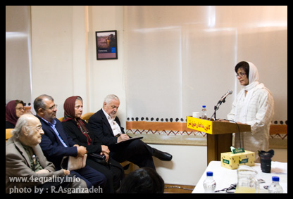
شجاعی افزود: " چند همسری هر چند در میان بخشی از قشار سنتی، طوایف و زندگی های ایلی و اقتداری به وضع یا نقض این قانون وابسته نیست اما افعال اعتراض آمیز زنان خواه در جسارت پیوستن به کمپین یک میلیون امضا و خواه در خودسوزی ها و خودکشی های نمادین فریاد بلند نه به این سنت تحمیل شده است. امروز مجلس هشتم قصد آن دارد که این سنت قبیله ای و منسوخ در جامعه مدنی را در قالب راه حلی اقتصادی و اخلاقی به جامعه ای حقنه کند که خود به عمل و به تجربه راه های نوین را شناخته است. ماده 23 این لایحه به مردانی که توانایی و تمکن مالی آنها تنها دلیل قانع کننده برای اختیار کردن چندین همسر است قدرتی مضاعف را تثبیت کرده است.
وی نقد هایی که به این لایحه از دیدگاه حقوقی فرهنگی جامعه شناختی و روانشناختی از سوی طیف های مختلف فعالان حقوق زنان مطرح شده است را در خشت و آینه دیدن مسائلی عنوان کرد که در اثر تصویب این لایحه بر بنیان های اجتماعی اخلاقی اقتصادی وفرهنگی این کشور هوار خواهد شد.
وی سخنان خود را با این جمله به پایان برد که امروز و در برابر این لایحه؛ نه تنها زنان ایران بلکه مردان ایرانی را هم خاموشی جایز نیست.
پروين اردلان: نمی گذاریم تاریخ تکرار شود
پروین اردلان، فعال حقوق زنان از دیگر سخنرانان این نشست مطبوعاتی بود. به گفته اردلان نزدیک به نیم قرن است که بحث حقوق خانواده درجامعه ما مطرح است. حقوقی که بخش مهمی از آن را حقوقدانانی چون مهرانگیز منوچهریان پیش بردند که در سال 1346 و سپس در سال 1353 به تصویب قا نونی به نام حمایت از خانواده منجر شد و برخی از نابرابری های حقوقی در میان اعضای خانواده اعم از زن و مرد را کاهش داد.
برنده جایزه ائلاف پالمه با اظهار تاسف از اینکه با لغو این قانون در انقلاب اسلامی همه این کوشش ها بر باد رفت، گفت:" اکنون نه تنها از لایحه حمایت خانواده سال 1346 عقب مانده ایم بلکه بار دیگر دولت ها برای سهم سازی در تاریخ و به نام حمایت از خانواده تیشه به ریشه ی آن می زنند. "
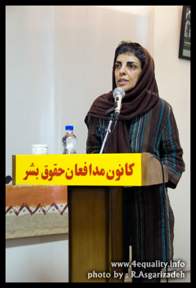
وی با اشاره به برخی استدلال ها مبنی بر اینکه قانون مترقی آن روز با عرف زنانه اش ناهمزمان بود، افزود:" اکنون باید از عرف قانون مداران و دولت مردان و دولت زنان سخن گفت که ناهمزمان با فرهنگ زنان جامعه، بی توجه به رشد آگاهی روز افزون زنان و مردان در جامعه و نابینا به وضعیت روزمره دادگاه های خانواده - که نه تنها زنان بلکه مردان را هم به گرداب نظم پدرسالارانه می کشاند، راه خود گرفته و می رود. "
اردلان ادامه داد:"به نام حمایت از خانواده قانونی طرح می شود تا حق انتخاب را بیش از پیش از زن بگیرد ؛ تا تمام اختیارات زن را و فرزند را در اختیار مرد قرار دهد؛ تا سرکوب را در زندگی اجتماعی تداوم بخشد و تداوم این اقدامات را در طرح سهمیه بندی جنسیتی و محدودیت ورود زنان به دانشگاه ها، طرح امنیت اجتماعی، امنیت اخلاقی و سایر طرح های دولت ساخته دیده ایم که چطور کنترل زنان در هر حوزه ای را نشانه گرفته اند. "
وی گفت:"اگر در قانون فعلی مرد صاحب اختیار است، در حوزه ای وسیع تر دولت است که قیم مابی را تداوم می بخشد. به واقع لایحه حمایت از خانواده تشدید سلطه و کنترل حکومتی بر زنان و خانواده ها است، زنانی که اکنون با حضورشان در جامعه، دموکراسی و حق خواهی و عدم تحمل الگوهای مردسالارانه را نهادینه کرده اند. متاسفانه عرف حاکمیت ما از عرف جامعه ای که بر آن حکم می راند عقب مانده است. اکنون حتا با استفاده ابزاری از قرآن و دین نیز نمی توان فرودستی زنان در قانون را تشدید کرد. سیاستی که منافع مردان را به دلیل چند همسری بسیاری از زمامداران و نمایندگان دولتش و به دلیل متمکن بودن آنان به نام اجرای عدالت جامه ی قانون می پوشاند، جز گسترش و تصویب ریا در قانون و به نام قانون تصویر دیگری از خود ارائه نمی دهد. "
به گفته این فعال حقوق زنان هم اکنون به یمن فعالیت های گسترده مدافعان حقوق زنان مانند کمپین یک میلیون امضا به مدد گسترش مباحث انتقادی در حوزه دین، قانون و دموکراسی، مطالبات حقوقی زنان به بخشی از گفتمان عمومی جامعه تبدیل شده است.
او با اشاره به اینکه به یمن همین گفتمان بود که قوانین تبعیض آمیز در وعده های نمایندگان مجلس هشتم گنجانده شد، گفت:" اما می بینیم که در برابر این حق طلبی و برابری خواهی زنان، لوایحی چون لایحه حمایت از خانواده مطرح می شوند تا این خواسته ها را تحت الشعاع قرار داده و تبعیض را در خانواده تثبیت کنند. "
وی اظهار داشت:"تصویب این لایحه از تبعیض در قوانین موجود نمی کاهد جز آن که گفتمان حقوقی زنان را به گفتماني حکومتی از خواسته های زنان بدل کند و به همت برابري زنان ومردان حق طلب و برابري طلب نمي گذاريم تاريخ تكرارشود."
عباس عبدی : مهریه نسیه است و تمام حقوق مرد نقد
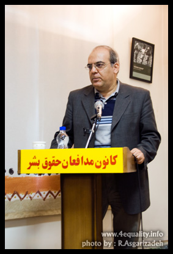
"کسی که می خواهد چنین قانونی را تصویب کند اول باید دید که چنین چیزی را برای دختر مادر و خواهر خود می پسندد که به آن جنبه ی قانونی می دهد؟" عباس عبدی با ذکر این نکته سخنان خود را آغاز کرد و از شکاف های موجود در حقوق مدون برخی از حوزه ها با خواست عمومی و کارکردهای اجتماعی آن گفت.
وی اظهار داشت:" در حوزه حقوق خانواده بر خلاف آنچه که گفته می شود ریشه ی این شکاف نه مذهب بلکه سنت است. سنت نظام مردسالاری."
به اعتقاد عبدی جامعه ما به دلیل در حال گذار بودن از یک الگوی ثابت برخوردار نیست و نمی تواند از یک الگوی ثابت تبعیت کند. در ازدواج هم می توان از الگوهای متعدد تبعیت کرد. زنان در قالب الگوی دیگر می توانند در ازای دریافت نکردن مهریه از سایر حقوق برابر در زندگی مشترک برخوردار باشند.
این فعال سیاسی تصویب لایحه حمایت از خانواده را بازگشت نظام مردسالار و سنتی عنوان کرد و گفت:"در گذشته مهریه زن نقد بود اما در شرایط فعلی مهریه نسیه است اما تمام حقوق مرد نقد است. "
احمد زید آبادی:تصویب چندهمسری، نتیجه کج فهمی آدم های بی تجربه است
کسانی که این لایحه را مطرح کرده اند آدمهای بی تجربه و ناآگاه نسبت به دانش اجتماعی هستند و طرح این لایحه نتیجه کج فهمی محض است که اگر تصویب شود تبعاتش منفی خواهد بود.
احمد زید آبادی با طرح این مسئله در نشست مطبوعاتی کانون مدافعان حقوق بشر، گفت:" اگر ما همان تفسیرها ی کاملا سنتی تاریخی را بپذیریم چند همسری در این تفاسیر هم واجب یا مستحب نیست و حد اکثر امری مباح است . اما طرح این موضوع به عنوان امری شرعی که الزامات قانونی را هم در پی خواهد داشت محل بحث است و نشان می دهد که یک نوع کج فهمی برای دریافت این امر شرعی وجود دارد."
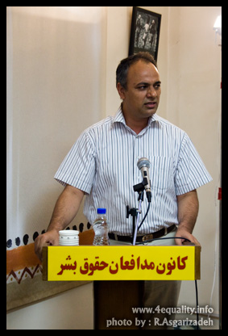
وی چندهمسری را با برده داری مقایسه کرد و افزود:" در قران به عنوان نمونه شیوه هایی برای نسخ برده داری هم وجود دارد اما نمی توانید آیه ای را در مدح برده داری پیدا کنید. بنا بر این بعضی از آقایان بر این اعتقادند که اگر شرایط ایجاب کند می شود برده هم داشت چون منع شرعی ندارد مطرح کردن تعدد زوجات در قرن بیست ویک مثل این است که این تعدد زوجات در این دوران مثل این است که بگویند می شود تعدادی برده هم داشت چون منع شرعی ندارد اما چون طرح این مساله افتضاح به بار می آورد و در واقع تاکید براین است که می توان انسانی را فروخت از گفتنش پرهیز می کنند. وگرنه پیامد منطقی روی این برداشت از شریعت می تواند برده داری را هم مجاز کند."
وی ادامه داد:"نوعی نگاه خوشبینانه هم می توان داشت که طرح این موضوع ناشی از برخورد با یک معضل عینی در جامعه ممکن است باشد. در سالهای اخیر یک قشر نو کیسه در ایران پا گرفته و صاحب قدرت شده است که ظاهرا در استفاده از تمتعات دنیوی حرص دارد . این قشر ممکن است خواستگاه مذهبی هم داشته باشند اما حالا که به نان و نوایی رسیدند در متن جامعه مرتب به دنبال صیغه هم می روند به طوری که این موضوع در محافل داخلی آقایان بعنوان یک مشکل هم مطرح است.
زن صیغه ای طبق این قانون و یا طبق شریعت هیچ حق و حقوق ندارد برای این که به خیال خودشان جلوی این صیغه های بی رویه را بگیرند و برای زن حقوقی قائل شوند راه چند همسری را باز گذاشته اند که راه صیغه کنترل شود. شاید قصد این بوده که برای بخشی از زنان که در حالت صیغه از همه حقوق محروم هستند نوعی از حقوق را تامین کنند. "
زید ابادی چند همسری را یک ناهنجاری برشمرد که تبعات به رسمیت شناختن ان در قالب قانون بسیار بیشتر از وجود یک ناهنجاری به رسمیت نشناخته شده در جامعه است. وی اضافه کرد:" این لایحه هم علیه مردان و هم علیه زنان و بچه هایی است که از همسران مختلف یک مرد به دنیا می آیند ."
ثریا عزیز پناه:این لایحه آواری است بر سر کودکان
ثریا عزیز پناه، دیبیر انجمن دفاع از حقوق کودکان نیز این لایحه را از منظر نگاه به حقوق کودکان بررسی کرد.
عزیز پناه گفت:"مهمترین پیامد این لایحه در زندگی کودکان نمود پیدا می کند و تجربه 15 سال کار انجمن حمایت از حقوق کودکان نشان می دهد که این لایحه آواری است بر سر کودکان که در شرایط فعلی دهها مشکل دارند و اگر قانون این اجازه را برای اختیار چند همسر به مردان بدهد آوار مجددی است بر زندگی کودکانی که در شرایط فعلی که از تبعیض در خانواده در رنج هستند."
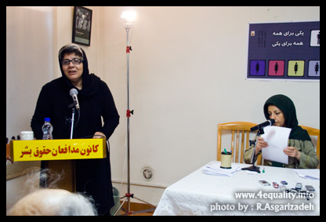
وی توجه فعالان زن را به صدماتی که این لایحه بر زندگی کودکان وارد می کند جلب کرد و افزود:" سرنوشت کودکان را در بطن اعتراضات قرار دهید و فراموش نکنید که کودکان با مشکلات غیر قابل تحمل و گوناگون در خانواده مواجه هستند ."
در انتهای این نشست بیانیه کانون مدافعان حقوق بشر در اعتراض به لایحه حمایت از خانواده قرائت شد. کانون مدافعان حقوق بشر ضمن اعلام مخالفت با لایحه پیشنهادی ، از ریاست محترم مجلس آقای لاریجانی و سایر اعضای محترم هیأت رئیسه مجلس شورای اسلامی درخواست می نماید که لایحه پیشنهادی را از نوبت رسیدگی خارج کرده و آن را جهت اصلاح ، به هیأت محترم دولت اعاده فرمایند و در صورتی که چنین تقاضائی مورد قبول قرار نگیرد ، به نمایندگان محترم مجلس شورای اسلامی خصوصا" فراکسیون اقلیت ، هشدار میدهیم که به هر شیوه قانونی ممکن ، مانع از تصویب لایحه مذکور شوند .
در این نشست علاوه بر خبرنگاران رسانه های داخلی و خارجی، فعالان طیف های مختلف جنبش زنان و خبرنگاران وب سایت های زنان نیز حضور داشتند.